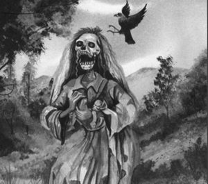

La Tulivieja

La Tulivieja fue originalmente una joven hermosa llamada Tulita, cuya vanidad y amor por las fiestas la llevaron a cometer un error imperdonable. Una noche, por querer ir a bailar, dejó a su bebé escondido en unos matorrales a la orilla del río. Una tormenta repentina hizo crecer la corriente, la cual se llevó al pequeño mientras su madre se divertía ignorando el paso del tiempo y su responsabilidad.
Al regresar y no encontrar a su hijo, la desesperación la volvió loca, y recibió un castigo divino que la transformó en un ser monstruoso. Su rostro se llenó de agujeros, su piel se marchitó y sus pies se invirtieron hacia atrás para que nadie pudiera seguir su rastro. Ahora vaga por las orillas de los ríos emitiendo un quejido agudo y desesperado que aterra a todo el que lo escucha en la noche.
Se dice que a veces recobra brevemente su apariencia hermosa para engañar a los hombres o se acerca a las casas donde lloran bebés por un instinto materno distorsionado. Su condena es buscar eternamente por los cauces de los ríos aquello que perdió por su propio egoísmo. Es la leyenda más famosa de Panamá y sirve como una poderosa advertencia sobre la responsabilidad y el cuidado familiar.